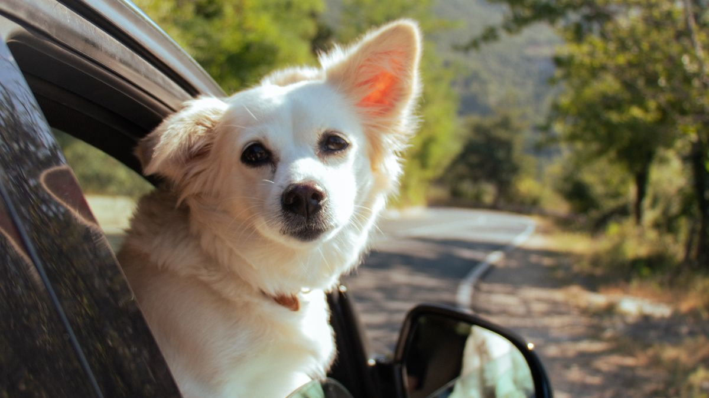

이동장·안전 고정
이동장은 시트벨트 또는 뒷좌석 바닥 고정. 풀어 놓고 주행하면 급정거 시 2m 이상 이동합니다. 집에서 이동장+간식 2분×7일.

단계적 연습
- 1~2일: 차에 이동장만 2분
- 3~4일: 시동 2분, 주차
- 5~6일: 50m 왕복
- 7일~: 5분씩 거리만 증가
연습 중 토·떨림이 있으면 그날 거리를 늘리지 말고 다음 날 같은 단계를 반복하세요. 이동장 문을 닫는 시간을 2초→5초→10초로 늘리면 닫힘 공포가 줄어드는 경우가 많습니다.
이동 당일
- 출발 3시간 전 급여 50%
- 물·담요·배변 패드·봉투 준비
- 더운 날: 시동 5분 냉방 후 탑승
- 90분마다 10분 휴식·물
장거리 이동 전날은 평소보다 30분 일찍 취침 루틴을 지키면 당일 컨디션이 안정되는 경우가 있습니다. 차 안 온도는 22~24℃를 목표로, 직사광선이 닿는 좌석은 피하세요.
온도·안전
주차 중 직사광선 아래 15분이면 실내 40℃를 넘을 수 있습니다. 사람 동반 없이 차에 두지 않기. 겨울은 담요+환기 2분/시간.

주차 중 반려동물 단독 대기는 여름·겨울 모두 위험합니다. 휴게소에서는 이동장을 그늘로 옮기고, 10분마다 물과 환기를 확인하세요.
실전 적용 노트
차량 이동은 '멀리 가기' 전에 '집 앞 5분 시동'부터 익히는 편이 안전합니다. 캐리어 안에 담요·간식을 넣고 문을 열어 둔 채 휴식처럼 씁니다.

이동 2시간 전에는 가벼운 식사만 하고, 출발 직전 대량 급여는 피합니다.
여름은 시동 후 5분 냉방, 겨울은 담요로 체온을 유지하세요. 직사광선이 닿는 좌석은 피합니다.
안전벨트·캐리어 고정은 매번 같은 방식으로 합니다. 급정거 시 미끄러지면 공포가 커집니다.
2시간마다 물·배변 기회를 주고, 고속도로 휴게소보다 조용한 곳을 고릅니다.
멀미 의심 시 창문 환기·속도 완만·짧은 이동 반복이 도움이 됩니다.
차 안에서 목줄만 채우고 문을 여는 것은 위험합니다. 문 열림은 캐리어 안에서만 합니다.
응급용 물·배변 패드·목록·병원 주소를 글러브박스에 상시 두세요.
이동 후 30분 휴식을 고정하면 다음 이동 스트레스가 줄어듭니다.
이번 주 차량 이동 체크리스트입니다. 먼 멀리 가기 전 짧은 시동부터입니다.
- 캐리어를 집 안 휴식처럼 열어 두었습니다.
- 출발 2시간 전 대량 급여를 피했습니다.
- 캐리어를 안전벨트·고정대로 매번 같은 방식 고정했습니다.
- 2시간마다 물·배변 기회를 줬습니다.
- 여름 시동 후 5분 냉방·겨울 담요를 준비했습니다.
- 멀미 의심 시 짧은 이동을 반복했습니다.
- 문 열림은 캐리어 안에서만 했습니다.
- 글러브박스에 물·패드·병원 주소를 넣었습니다.
차 안 공포는 한 번의 장거리보다, 반복되는 5분 시동에서 줄어드는 경우가 많습니다.
차량 이동은 멀리 가기 전 5분 시동·캐리어 적응이 안전합니다. 출발 2시간 전 대량 급여 금지, 캐리어 고정 방식 통일, 2시간마다 물·배변 기회를 주세요. 여름 냉방·겨울 담요, 멀미는 짧은 이동 반복이 도움이 됩니다. 문은 캐리어 안에서만 열고, 글러브박스에 응급 kit를 상시 두세요.
집 앞 5분 시동을 주 3회 반복하면, 병원·이사 당일 차량 공포가 크게 줄어드는 경우가 많습니다.
마무리로, 이번 주에는 체크리스트 3개만 골라 2주 반복해 보세요. 작은 성공이 쌓이면 나머지는 자연스럽게 늘어납니다.
기록이 쌓이면 병원·상담 때 설명이 쉬워집니다. 한 줄 메모라도 같은 항목으로 이어 쓰는 것이 핵심입니다.
완벽한 루틴보다 80% 지켜지는 루틴이 오래 갑니다. 안 된 날은 원인 한 줄만 적고 다음 주에 조정하세요.
오늘 당장 하나만 고른다면, 체크리스트 맨 위 항목부터 시작해 보세요. 나머지는 다음 주로 미뤄도 괜찮습니다.
가족이 함께 돌본다면, 누가 했는지 체크박스 한 칸만 추가해도 누락·중복이 줄어듭니다.
검색으로 답을 찾기 전에 7일 메모를 먼저 정리해 보세요. 증상 설명이 훨씬 빨라지는 경우가 많습니다.
새 용품·새 사료·새 루틴은 동시에 바꾸지 않습니다. 한 가지만 바꾸고 5일 관찰하는 편이 안전합니다.
이번 달 목표는 '매일 완벽'이 아니라 '이번 주 3회 성공'입니다. 0회에서 1회로 바뀌는 것만으로도 충분한 진전입니다.
스트레스 신호(회피·짖음·숨 가쁨)가 보이면 시간을 반으로 줄이세요. 짧게 자주 성공하는 쪽이 학습에 유리합니다.
계절·이사·손님처럼 환경이 바뀌는 주에는 루틴을 단순화하세요. 필수 3개만 지키고 나머지는 다음 주로 미뤄도 됩니다.
사진 한 장이 긴 설명보다 나을 때가 있습니다. 같은 조명·각도로 남기면 변화 비교가 쉬워집니다.
병원 방문 전에는 '언제부터·얼마나 자주·무엇이 함께 변했는지' 3가지만 정리해도 상담이 수월해집니다.
루틴이 무너진 날을 실패로 보지 말고, 겹친 일정(야근·손님·이사)을 한 줄로 적어 두세요. 다음 주 조정 근거가 됩니다.
정리하며
첫 차탈 때 3시간 고속도로를 뛰어들면, 다음 6개월 차 문만 닫혀도 떨립니다.
저는 차 이동을 '목적지'가 아니라 '7일 연습'으로 씁니다. 연습 없는 이동은 도박에 가깝습니다.
오늘은 차 문 열고 이동장 2분만 연습해 보세요. 7일 후의 2시간 이동은 오늘부터 시작됩니다.
초보자가 자주 실수하는 포인트
- 첫 이동부터 3시간 장거리
- 이동장 없이 풀어 놓고 주행
- 더운 날 환기 없이 대기
- 출발 직전 만땅 급여
- 7일 연습 생략
체크리스트
- 이동장 7일 긍정 연습
- 시트 고정 확인
- 이동 키트(물·담요·패드)
- 출발 3시간 전 50% 급여
- 90분마다 휴식
자주 묻는 질문
- 차 멀미가 심하면 어떻게 하나요?
- 7일 단계 연습을 더 쪼개고, 출발 3시간 전 급여를 줄이세요. 지속되면 수의사와 상담을 검토하세요.
- 이동장 없이 안전벨트만 써도 되나요?
- 반려동물 전용 안전벨트·캐리어도 있지만, 급정거 시 고정이 약할 수 있어 이동장+시트 고정을 우선 권합니다.
이 글은 초보자 기준으로 이해하기 쉽게 정리되었으며, 내용은 운영 과정에서 순차적으로 보완될 수 있습니다. 수의사 등 전문가의 진단·처치를 대체하지 않습니다.